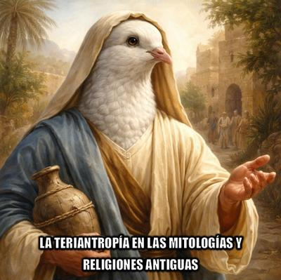

Estamos siendo testigos del surgimiento de una subcultura juvenil conocida como «los therians», integrada por personas (generalmente adolescentes) que se identifican —de manera simbólica o psicológica— con determinados animales. Se trata de un fenómeno que desde una perspectiva crítica merece un análisis desapasionado.


¿Qué significa eso de «therian»? —El término proviene del inglés therianthropy, que en español se traduce como teriantropía. Lingüísticamente, la palabra está formada del griego thēríon (θηρίον), que significa «animal salvaje», y ánthrōpos (ἄνθρωπος), que significa «ser humano». Por tanto, therianthropy significa literalmente «condición de hombre-animal» o «fusión humano-animal». La forma abreviada «therian» sería, etimológicamente, «relativo a la teriantropía». Esta explicación etimológica es aceptable desde el punto de vista lingüístico.
Y puede definirse teriantropía o teriomorfismo, como «cualquier transformación de un ser humano en otro animal, ya sea de manera completa o parcial, así como la transformación inversa en un contexto mitológico o espiritual. En lo que concierne al estudio cultural, mitológico o antropológico, el teriomorfismo describe un personaje que comparte rasgos humanos y/o rasgos tomados de otros animales.»[1]
O sea, la teriantropía no es algo nuevo, aunque históricamente no designaba adolescentes (y otros no tanto) que usan máscara de caballo y fingían comer pasto en las redes sociales, sino que se refería a seres mitológicos híbridos o humanos, capaces de transformarse en animales.
Aunque hay otro componente en este fenómeno: el psiquiátrico. En psiquiatría existe un término específico, zoantropía clínica, que describe el delirio en el cual una persona cree literalmente haberse transformado en un animal. Siendo éste un cuadro que suele aparecer como síntoma de trastornos psicóticos, alteraciones neurobiológicas, consumo de sustancias o patologías neurológicas.
Pero ojo, es importante distinguir entre zoantropía clínica, que es una pérdida del juicio y de la realidad, es decir, un delirio, y los modernos therians, quienes por lo general no presentan un delirio ni ruptura con la realidad, sino que solamente se exhiben identificándose simbólica, emocional o estéticamente, con un animal.
En la mayoría de los casos contemporáneos, el fenómeno parece responder a factores culturales, psicológicos y de identidad, no a psicosis. Es, más bien, una construcción identitaria dentro de entornos digitales, foros y comunidades juveniles. No son personas que «crean» ser animales en sentido biológico; más bien afirman sentirse conectadas con ciertos rasgos que atribuyen a esos animales.
¿Un exhibicionismo o forma de llamar la atención? —Desde una perspectiva crítica, esto puede interpretarse como una búsqueda de identidad en un mundo hiperfragmentado, donde las etiquetas funcionan como refugios psicológicos.
Pero el hecho es que mucho antes del TikTok, la teriantropía ya era un recurso narrativo central en religiones antiguas. En el antiguo Egipto, por ejemplo, tenemos múltiples divinidades que combinaban rasgos humanos y animales:
Anubis (cabeza de chacal).
Horus (cabeza de halcón).
Sekhmet (cabeza de leona).
Thoth (cabeza de ibis, una especie de ave).
Apis (cabeza de toro)
Pero no se trata aquí de una teriantropía que era identidad psicológica, sino de un atributo divino. El animal simbolizaba poder, fuerza, sabiduría o agresividad. Y la mezcla humano-animal funcionaba como lenguaje simbólico del mito.
En la mitología griega, el licántropo —hombre lobo— es otro ejemplo clásico. La palabra proviene de lykos (lobo) y anthropos (hombre). Un mito que aparece ya en la historia de Lycaon, castigado por Zeus y transformado en lobo. Por tanto, aquí la transformación expresa castigo, transgresión o pérdida de humanidad.
Tenemos también al Minotauro, un ser con cuerpo de hombre y cabeza de toro, hijo de Pasífae, esposa del rey Minos de Creta, quien se enamoró perdidamente de un toro. Pero de nuevo, la teriantropía es un recurso mitológico, no una forma de identidad juvenil.
Y en el caso del hinduismo resulta muy visible el caso de Ganesha, el dios con cuerpo humano y cabeza de elefante, adorado por aproximadamente mil millones de personas en todo el mundo. Según la mitología hindú, el dios Shiva, padre de Ganesha, le cortó accidentalmente la cabeza humana original al no reconocerlo como su hijo, reemplazándola con la del primer animal que encontró, un elefante. Pero según ellos, ese cambio simboliza la sabiduría suprema y la destrucción del ego.
Pero mencionemos también a los evangelios canónicos, donde el Espíritu Santo desciende «como paloma» durante el bautismo de Jesús (Mateo 3:16, Marcos 1:10, Lucas 3:22, Juan 1:32). Es decir, los «textos sagrados» describen a una deidad manifestándose en forma de ave. Y por otra parte, en Lucas 1:35, se afirma que ese mismo Espíritu Santo que tiene características teriantrópicas, «cubrirá con su sombra» a María para concebir a Jesús.
Algo que desde una perspectiva mitológica comparada no resulta nada extraño: en la Antigüedad abundan relatos donde dioses que adoptan forma animal fecundan mujeres humanas. En la mitología griega, Zeus se transforma en cisne para seducir a Leda, reina de Esparta, mientras ella estaba junto al río Eurotas. Y de esa unión, Leda puso huevos, de los cuales nacieron Helena de Troya y Pólux, hijos de Zeus. No es el caso de María, quien habría dado a luz en la forma natural humana.
¿Se trata de dioses teriántropos? Técnicamente sí: son ejemplos de metamorfosis divina en forma animal. La diferencia es que, en estos mitos, la transformación es un poder sobrenatural del dios, no una identidad psicológica.
Por consiguiente, desde una mirada antropológica, el fenómeno moderno de los therians no surge en el vacío. La humanidad ha imaginado durante milenios fusiones humano-animal como símbolos de poder, fertilidad, castigo o trascendencia. La diferencia es que en la religión antigua, la teriantropía legitimaba estructuras de poder y explicaba fenómenos naturales, mientras que en la subcultura actual funciona como identidad simbólica individual en un entorno digital.
Ahora bien, lo interesante es que muchos creyentes, mientras ridiculizan a los therians, veneran —o al menos estudian con todo respeto— tradiciones donde los dioses se transforman en palomas, cisnes, toros, o adoptan cabezas de elefante o de chacal. Donde el mecanismo mental subyacente —atribuir cualidades humanas a animales y animales a lo divino— es profundamente humano y anterior a cualquier red social.
Pero desde una perspectiva racionalista, ambos fenómenos pueden entenderse como expresiones culturales del mismo impulso imaginativo: la tendencia humana a difuminar los límites entre especie, símbolo y significado.
Y en este contexto, la pregunta no es si existen dioses teriántropos o jóvenes-lobo «espirituales» (therians), sino por qué el cerebro humano encuentra tan natural esa fusión. Y la respuesta probablemente no esté en el Cielo cristiano ni en el Olimpo de los dioses griegos, sino en la neurobiología, la psicología evolutiva y la necesidad humana de narrativas identitarias —aunque sean absurdas.
[Godless Freeman]
Comentarios
Comments powered by Disqus